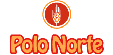
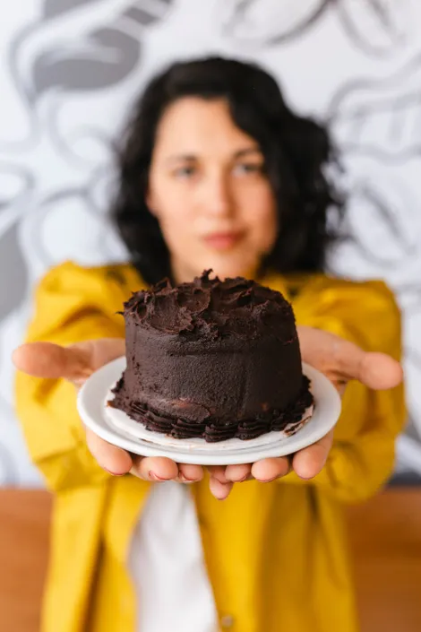
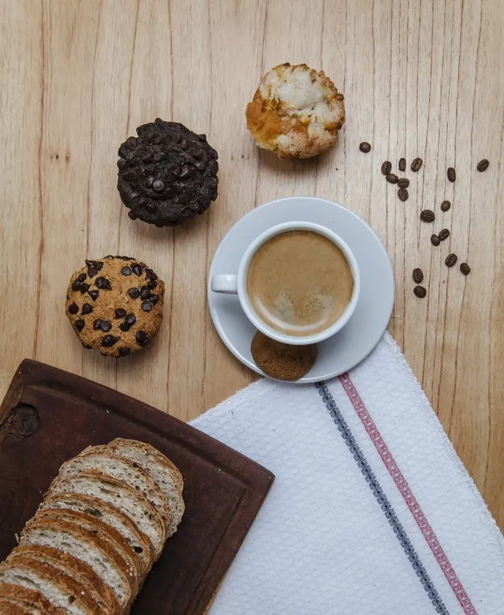

Email:polonorte@gmail.com Tel:+54 3815484847

Home
Sucursales
Contacto
Distribuidor
Nosotros
Sobre Nosotros
Somos una empresa familiar, que comenzó con un pequeño sueño, tan pequeño como las miguitas de un pan que apenas dejan verse en la mesa después de un almuerzo en familia, somos una fuente de trabajo estable para expertos artesanos de la panadería y la cafetería.
El saber personal de cada uno de ellos, y el amor que sienten por sus creaciones, son nuestra principal materia prima para acercar a tu mesa productos que te hacen sentir bien.
En el año 2005 nos lanzamos detrás de un sueño y fundamos nuestra primera panadería artesanal en Tucumán.
Iniciamos con un Maestro Panadero -Manolo- y con cuatro personas en Atención al Cliente. Hoy, 15 años después, Manolo sigue con nosotros, pero ya son 10 sucursales que abrimos en nuestra querida provincia, 6 con servicio de cafetería incluido, y más de 60 los puestos de trabajo generados.


Que Hacemos
Nos dedicamos a la producción artesanal de las más deliciosas piezas de panadería y cafetería. Hechas con ingredientes naturales, sin aditivos artificiales de ningún tipo, por lo que te garantizamos productos siempre frescos y saludables. Cada local es un punto caliente, desde nuestras cocinas salen frescos todos los días cada uno de nuestros productos.
Trabajamos con dedicación y amor, porque nos apasiona lo que hacemos: probar sabores, texturas y presentaciones hasta dar con la combinación perfecta, esa es nuestra meta.
TRABAJANDO EN EQUIPO, DAMOS SIEMPRE LO MEJOR.